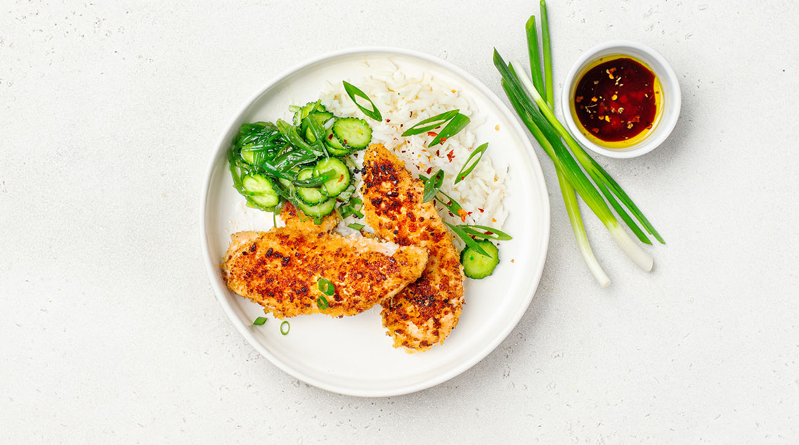

Японская курица кацу с соусом комбу

Вам понадобится
в крафт-пакете №3: рис жасмин, релиш из огурца, азиатский соус с водорослями комбу, чука, яйцо, панировочные сухари Панко, пшеничная мука, зеленый лук
из термопакета: курица / слайсы (300 г)
Как готовить
Кипятим чайник
Рис жасмин, 0,25 ч. л. соли высыпаем в ковш и ставим на средний огонь
Заливаем чуть больше 1 стакана (210 мл) кипятка
Перемешиваем. Накрываем крышкой
Оставляем на 8 минут
Яйцо моем и разбиваем в пиалу, взбиваем вилкой
Панировочные сухари Панко высыпаем на одну часть тарелки,
пшеничную муку – на другую
Сковороду с 1 ст. л. раст. масла ставим на сильный огонь и оставляем нагреваться
Курицу посыпаем по 0,25 ч. л. соли и перца с двух сторон
Обваливаем в муке -> потом окунаем в яйцо -> и затем обваливаем в сухарях
Выкладываем в разогретую сковороду
Жарим по 2 минуты с двух сторон
Выключаем огонь. Накрываем крышкой
Оставляем на 1 минуту, а потом снимаем крышку
Когда 8 минут для риса прошло, снимаем с огня
Оставляем под крышкой на 2 минуты
Рис раскладываем по тарелкам. Рядом – курицу, релиш из огурца и чука
Если вы не едите лук, можно отложить его в сторону и не использовать
Зеленый лук моем, режем и посыпаем блюдо
Едим курицу, макая в азиатский соус с водорослями комбу
Корректируйте время приготовления в соответствии с вашей кухонной техникой